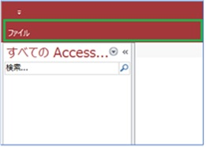
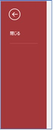

(※ 2017 年 12 月 29 日に Japan Office Support Blog に公開した情報のアーカイブです。)
こんにちは、Office サポート チームです。
ユーザー単位で Access 2016 自体の組み込みのリボンを非表示にするには、[Access のオプション] (※ 1) で設定可能ですが、ファイル単位で変更する場合、RibbonXML を利用します。
本記事では、Access 2016 で .accdb ファイル毎に組み込みのリボンを非表示にする方法を説明します。
※ 1. [Access のオプション] - [リボンのユーザー設定] で非表示にするリボンをチェックオフします。
組み込みのリボンを非表示にする方法
Access の起動時にカスタマイズされたリボンを読み込むには、その設定を USysRibbons という名前のテーブルに保存する必要があります。
このテーブルにリボンを非表示にする RibbonXML を入力します。
手順
- Access 2016 で空のデータベースを新規作成します。
- USysRibbons テーブルを次の構成で作成します。
USysRibbons テーブル:
| 列名 | データ型 | 説明 |
|---|---|---|
| RibbonName | 短いテキスト型 (Text) |
このカスタマイズに関連付けられる カスタム リボンの名前が含まれます。 |
| RibbonXML | 長いテキスト型 (Memo) |
リボンのカスタマイズを定義する リボン拡張 XML (RibbonX) が含まれます。 |
- USysRibbons テーブルをデータシートビューで開き、各列に、次のデータを入力します。
| 列名 | 値 |
|---|---|
| RibbongName | HideTheRibbon |
| RibbonXML | <customUI xmlns=”http://schemas.microsoft.com/office/2006/01/customui"> <ribbon startFromScratch=”true”/> </customUI> |
設定した UsysRibbons テーブルの設定を読み込ませるため、ファイルを一旦閉じます。
手順 1 で作成したファイルを再度開きます。
[ファイル] - [オプション] をクリックします。
[Access のオプション] にある [現在のデータベース] を選択します。
[リボンとツール バーのオプション] セクションで [リボン名] ボックスから HideTheRibbon を選択します。
オプションを閉じます。
Access を終了します
手順 1 で作成したファイルを開きます。以下のように [ファイル] タブだけが表示されます。

以下の RibbonXML を使用した場合は、[ファイル] タブのバックステージビューにある [閉じる] ボタン以外が非表示になります。
1 | <customUI xmlns="http://schemas.microsoft.com/office/2009/07/customui"> |

※ リボンの表示が変更されない場合は、上述の XML をメモ帳へ一度コピーし、メモ帳経由で RibbonXML フィールドに貼り付けください。
RibbonXML 解説
startFromScratch属性を true に設定すると、[ファイル] タブ以外の既存のリボン タブすべてが非表示になります。
Office 2010 以降の機能である、Backstage ビューをカスタマイズするため、
Office 2010 以降の名前空間
を使用しています。
[ファイル] タブの各項目の RibbonXML です。
| 情報 | <tab idMso=”TabInfo” visible=”false” /> |
| 新規 | <tab idMso=”TabOfficeStart” visible=”false” /> |
| 開く | <tab idMso=”TabRecent” visible=”false” /> |
| 上書き保存 | <button idMso=”FileSave” visible=”false” /> |
| 名前を付けて保存 | <tab idMso=”TabSave” visible=”false” /> |
| 印刷 | <tab idMso=”TabPrint” visible=”false” /> |
| 閉じる | <button idMso=”FileCloseDatabase” visible=”false” /> |
| アカウント | <tab idMso=”TabHelp” visible=”false” /> |
| オプション | <button idMso=”ApplicationOptionsDialog” visible=”false” /> |
| フィードバック | <tab idMso=”TabOfficeFeedback” visible=”false”/> |
参考情報
RibbonXML で使用するコントロールのID (idMso) が記載されているファイルを以下サイトからダウンロードできます。
Office 2016 製品の Office Fluent User Interface Control Identifiers
Office 2013 製品の Office Fluent User Interface Control Identifiers